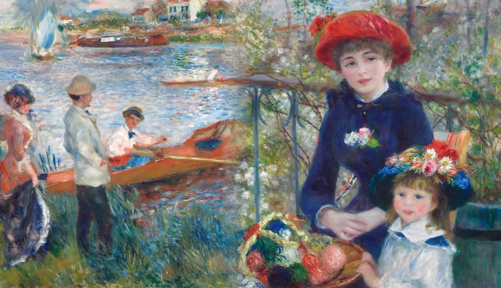
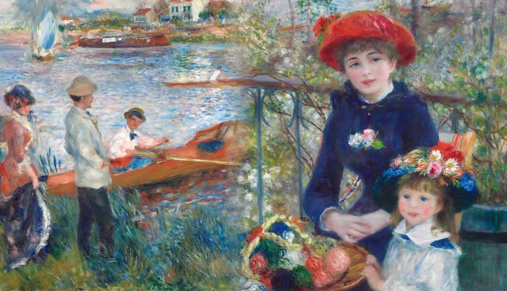

Many people consider Impressionism as the first modern art movement due to how it was influenced by the industrial advancements of the age. Contrary to previous movements, Impressionist painters didn’t focus on copying the scene before them exactly as they saw it. Instead, artists sought to capture the emotion and sensation of the scene with bright colours and unblended brush strokes. Claude Monet, one of the most influential Impressionist painters, said this about the art movement: “Now I really feel the landscape. I can be bold and include every tone of pink and blue: it's enchanting, it's delicious.”
Impressionist painters loved to paint en plein air in the countryside, since common subjects were everyday matters, like labour or landscapes. This approach also required the artists to work quickly, which contributed to the “roughness” of the painting. The artists would use short, quick brush strokes to capture the fleeting light. Instead of using grey or black to paint shadows, Impressionist painters also used complementary colours instead. This contributed to the bright appearance of the paintings.
One of the main innovations during the 19th century is the collapsible paint tube. The oil paints were put in a portable and convenient container and the colors were pre-mixed. Paint companies also found a way to keep the pigment suspended in the linseed oil, which revolutionized paint-making, since artists no longer needed to ground pigments and mix them with the linseed oil themselves.
The invention of synthetic pigments also revolutionized art. Colours were being made brighter and more easily than ever before.
These advances in paint were the catalysts for the birth of Impressionism. The ability to achieve bright colours and the fact that plein-air painting had become so simple with the invention of paint tubes were the perfect foundation for Impressionism to flower.
 
